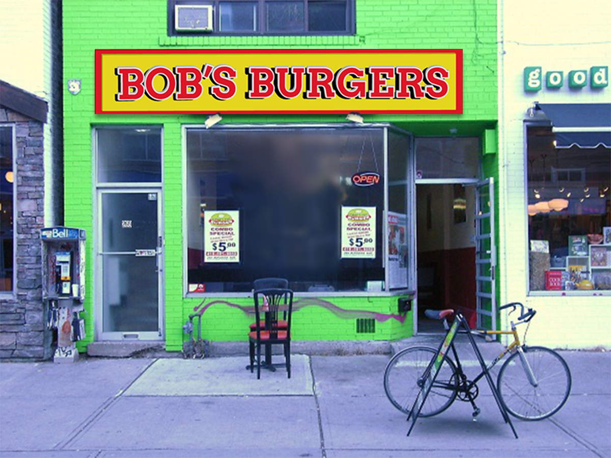

Come Meat Our Family! Let us Meat You!
Bob's Burgers was originally conceived in 2009. The founder, Bob Belcher, couldn’t find the burger he’d been dreaming about since he left his father's family restaurant, Big Bob's Diner, in 1989. As burgers were his true passion, Bob wanted a burger that was meatier, juicier, unique in taste and condiments, that he would feel good about feeding his family and that tasted better than plain beef burgers on a bun. Seeing an opportunity, Bob focused his energy on creating a burger that truly stood apart from the rest in terms of taste and uniqueness.
After three years of careful planning and countless hours of unique recipes, Bob and his wife Linda opened their restaurant, Bob's Burgers, in 2011, alongside their three children, Tina, Gene, and Louise. Driven by a passion for good food that’s unique, meaty and fresh, Bob's Burgers is the best place you'll find burgers in Ocean Avenue.
